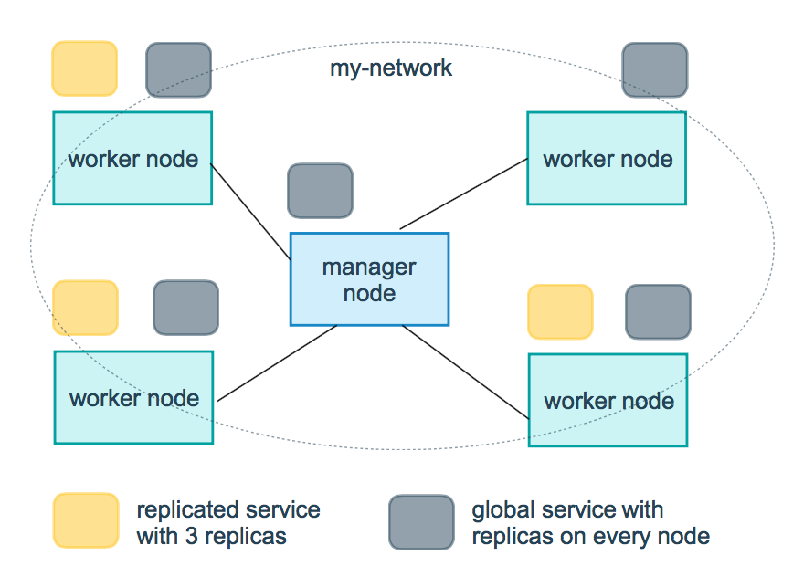

Docker Compose
Compose の概要
Compose は、複数コンテナの Docker アプリケーションを定義および実行するためのツールです。Compose を使用すると、YML ファイルを使用してアプリケーションに必要なすべてのサービスを構成できます。そして、1つのコマンドで、YML ファイルの構成からすべてのサービスを作成および起動できます。
YML ファイルの構成についてまだよく分からない場合は、先に読むことができます：YAML 入門チュートリアル。
Compose を使用する3つのステップ：
-
Dockerfile を使用してアプリケーションの環境を定義します。
-
docker-compose.yml を使用して、アプリケーションを構成するサービスを定義します。これにより、それらは分離された環境で一緒に実行できます。
-
最後に、docker-compose up コマンドを実行して、アプリケーション全体を起動および実行します。
docker-compose.yml の設定例は次のとおりです（設定パラメータは後述を参照）：
実例
version: '3'
services:
web:
build: .
ports:
- "5000:5000"
volumes:
- .:/code
- logvolume01:/var/log
links:
- redis
redis:
image: redis
volumes:
logvolume01: {}
Compose のインストール
Linux では、Github からバイナリパッケージをダウンロードして使用できます。最新のリリースバージョンのアドレス：https://github.com/docker/compose/releases。
次のコマンドを実行して、Docker Compose の現在の安定版をダウンロードします：
$ sudo curl -L "https://github.com/docker/compose/releases/download/v2.2.2/docker-compose-$(uname -s)-$(uname -m)" -o /usr/local/bin/docker-compose
他のバージョンの Compose をインストールするには、v2.2.2 を置き換えてください。
Docker Compose は GitHub に置かれており、あまり安定していません。
次のコマンドを実行して、Docker Compose を高速にインストールすることもできます。
curl -L https://get.daocloud.io/docker/compose/releases/download/v2.4.1/docker-compose-`uname -s`-`uname -m` > /usr/local/bin/docker-compose
バイナリファイルに実行権限を適用します：
$ sudo chmod +x /usr/local/bin/docker-compose
シンボリックリンクを作成します：
$ sudo ln -s /usr/local/bin/docker-compose /usr/bin/docker-compose
インストールが成功したかテストします：
$ docker-compose version cker-compose version 1.24.1, build 4667896b
注意： alpine の場合は、以下の依存パッケージが必要です： py-pip、python-dev、libffi-dev、openssl-dev、gcc、libc-dev、および make。
macOS
Mac の Docker Desktop と Docker Toolbox には Compose や他の Docker アプリケーションが含まれているため、Mac ユーザーは Compose を個別にインストールする必要はありません。Docker のインストール手順は次を参照できます：MacOS Docker のインストール。
windows PC
Windows の Docker Desktop と Docker Toolbox には Compose や他の Docker アプリケーションが含まれているため、Windows ユーザーは Compose を個別にインストールする必要はありません。Docker のインストール手順は次を参照できます：Windows Docker のインストール。
使用
1、準備
テストディレクトリを作成します：
$ mkdir composetest $ cd composetest
テストディレクトリに app.py という名前のファイルを作成し、以下の内容をコピーして貼り付けます：
composetest/app.py ファイルのコード
import redis
from flask import Flask
app = Flask(__name__)
cache = redis.Redis(host='redis', port=6379)
def get_hit_count():
retries = 5
while True:
try:
return cache.incr('hits')
except redis.exceptions.ConnectionError as exc:
if retries == 0:
raise exc
retries -= 1
time.sleep(0.5)
@app.route('/')
def hello():
count = get_hit_count()
return 'Hello World! I have been seen {} times.\n'.format(count)
この例では、redis はアプリケーションネットワーク上の redis コンテナのホスト名であり、このホストはポート 6379 を使用します。
composetest ディレクトリに、別のrequirements.txtという名前のファイルを作成します。内容は次のとおりです：
flask redis
2、Dockerfile ファイルの作成
composetest ディレクトリに、Dockerfileという名前のファイルを作成します。内容は次のとおりです：
FROM python:3.7-alpine WORKDIR /code ENV FLASK_APP app.py ENV FLASK_RUN_HOST 0.0.0.0 RUN apk add --no-cache gcc musl-dev linux-headers COPY requirements.txt requirements.txt RUN pip install -r requirements.txt COPY . . CMD ["flask", "run"]
Dockerfile の内容の説明：
- FROM python:3.7-alpine: Python 3.7 イメージからビルドを開始します。
- WORKDIR /code: 作業ディレクトリを /code に設定します。
-
ENV FLASK_APP app.py ENV FLASK_RUN_HOST 0.0.0.0
flask コマンドで使用する環境変数を設定します。
- RUN apk add --no-cache gcc musl-dev linux-headers: gcc をインストールして、MarkupSafe や SQLAlchemy などの Python パッケージをコンパイルして高速化できるようにします。
-
COPY requirements.txt requirements.txt RUN pip install -r requirements.txt
requirements.txt をコピーし、Python の依存関係をインストールします。
- COPY . .: . プロジェクト内の現在のディレクトリを . イメージ内の作業ディレクトリにコピーします。
- CMD ["flask", "run"]: コンテナのデフォルトの実行コマンドは flask run です。
3、docker-compose.yml の作成
テストディレクトリに docker-compose.yml という名前のファイルを作成し、以下の内容を貼り付けます：
docker-compose.yml 設定ファイル
version: '3'
services:
web:
build: .
ports:
- "5000:5000"
redis:
image: "redis:alpine"
この Compose ファイルは、web と redis の2つのサービスを定義します。
- web: この web サービスは、Dockerfile 現在のディレクトリからビルドされたイメージを使用します。その後、コンテナとホストを公開ポート 5000 にバインドします。このサンプルサービスは、Flask Web サーバーのデフォルトポート 5000 を使用します。
- redis: この redis サービスは、Docker Hub のパブリック Redis イメージを使用します。
4、Compose コマンドを使用してアプリケーションを構築および実行する
テストディレクトリで、次のコマンドを実行してアプリケーションを起動します：
docker-compose up
バックグラウンドでそのサービスを実行したい場合は、次の-dパラメータを追加します：
docker-compose up -d
yml 設定ディレクティブリファレンス
version
この yml が準拠する compose のバージョンを指定します。
build
イメージを構築するためのコンテキストパスを指定します：
たとえば、webapp サービスの場合、コンテキストパス ./dir/Dockerfile から構築されたイメージとして指定します：
version: "3.7"
services:
webapp:
build: ./dir
または、コンテキストで指定されたパスを持つオブジェクトとして、オプションの Dockerfile と args を指定します：
version: "3.7"
services:
webapp:
build:
context: ./dir
dockerfile: Dockerfile-alternate
args:
buildno: 1
labels:
- "com.example.description=Accounting webapp"
- "com.example.department=Finance"
- "com.example.label-with-empty-value"
target: prod
- context: コンテキストパス。
- dockerfile: イメージを構築する Dockerfile ファイル名を指定します。
- args: ビルドパラメータを追加します。これはビルド中にのみアクセスできる環境変数です。
- labels: ビルドイメージのラベルを設定します。
- target: マルチステージビルド。どのレイヤーを構築するかを指定できます。
cap_add，cap_drop
コンテナが持つホストのカーネル機能を追加または削除します。
cap_add: - ALL # 开启全部权限 cap_drop: - SYS_PTRACE # 关闭 ptrace权限
cgroup_parent
コンテナに親 cgroup グループを指定します。つまり、そのグループのリソース制限を継承します。
cgroup_parent: m-executor-abcd
command
コンテナの起動時のデフォルトコマンドを上書きします。
command: ["bundle", "exec", "thin", "-p", "3000"]
container_name
生成されるデフォルト名ではなく、カスタムコンテナ名を指定します。
container_name: my-web-container
depends_on
依存関係を設定します。
- docker-compose up : 依存関係の順序でサービスを起動します。次の例では、最初に db と redis を起動してから、web を起動します。
- docker-compose up SERVICE : SERVICE の依存関係を自動的に含めます。次の例では、docker-compose up web は db と redis も作成および起動します。
- docker-compose stop : 依存関係の順序でサービスを停止します。次の例では、web は db と redis の前に停止します。
version: "3.7"
services:
web:
build: .
depends_on:
- db
- redis
redis:
image: redis
db:
image: postgres
注意：web サービスは、redis と db が完全に起動するのを待ってから起動するわけではありません。
deploy
サービスのデプロイと実行に関する設定を指定します。swarm モードでのみ有効です。
version: "3.7"
services:
redis:
image: redis:alpine
deploy:
mode：replicated
replicas: 6
endpoint_mode: dnsrr
labels:
description: "This redis service label"
resources:
limits:
cpus: '0.50'
memory: 50M
reservations:
cpus: '0.25'
memory: 20M
restart_policy:
condition: on-failure
delay: 5s
max_attempts: 3
window: 120s
選択可能なパラメータ：
endpoint_mode: クラスタサービスへのアクセス方法。
endpoint_mode: vip # Docker 集群服务一个对外的虚拟 ip。所有的请求都会通过这个虚拟 ip 到达集群服务内部的机器。 endpoint_mode: dnsrr # DNS 轮询（DNSRR）。所有的请求会自动轮询获取到集群 ip 列表中的一个 ip 地址。
labels: サービスにラベルを設定します。コンテナ上の labels（deploy と同じレベルの設定）で deploy 下の labels を上書きできます。
mode: サービスが提供するモードを指定します。
-
replicated: レプリケートサービス。指定したサービスをクラスタのマシンに複製します。
-
global: グローバルサービス。サービスはクラスタの各ノードにデプロイされます。
-
図解：下の図の黄色い四角は replicated モードの動作状況で、灰色の四角は global モードの動作状況です。

replicas：modereplicated の場合、このパラメータを使用して実際に実行するノード数を設定する必要があります。
resources: サーバーリソースの使用制限を設定します。たとえば、上記の例では、redis クラスタの実行に必要な CPU のパーセンテージとメモリの使用量を設定します。リソースの過剰使用による異常を回避します。
restart_policy: コンテナ終了時にコンテナを再起動する方法を設定します。
- condition: none、on-failure、または any から選択します（デフォルト値：any）。
- delay: 再起動までの時間を設定します（デフォルト値：0）。
- max_attempts: コンテナの再起動を試行する回数。回数を超えると試行しなくなります（デフォルト値：常に再試行）。
- window: コンテナ再起動のタイムアウト時間を設定します（デフォルト値：0）。
rollback_config：更新が失敗した場合に、サービスをどのようにロールバックするかを設定します。
- parallelism：一度にロールバックするコンテナ数。0に設定すると、すべてのコンテナが同時にロールバックされます。
- delay：各コンテナグループのロールバックの間に待機する時間（デフォルトは0s）。
- failure_action：ロールバックが失敗した場合の対処。continue または pause（デフォルトはpause）。
- monitor：各コンテナの更新後、失敗したかどうかを監視し続ける時間 (ns|us|ms|s|m|h)（デフォルトは0s）。
- max_failure_ratio：ロールバック中に許容できる障害率（デフォルトは0）。
- order：ロールバック中の操作順序。stop-first（直列ロールバック）または start-first（並列ロールバック）（デフォルトはstop-first）。
update_config：サービスをどのように更新するかを設定します。設定のローリングアップデートに役立ちます。
- parallelism：一度に更新するコンテナ数。
- delay：コンテナのグループを更新する間に待機する時間。
- failure_action：更新が失敗した場合の対処。continue、rollback、または pause（デフォルト：pause）。
- monitor：各コンテナの更新後、失敗したかどうかを監視し続ける時間 (ns|us|ms|s|m|h)（デフォルトは0s）。
- max_failure_ratio：更新プロセス中に許容できる障害率。
- order：ロールバック中の操作順序。stop-first（直列ロールバック）または start-first（並列ロールバック）（デフォルトはstop-first）。
注：V3.4以降でのみサポートされています。
devices
デバイスマッピングのリストを指定します。
devices: - "/dev/ttyUSB0:/dev/ttyUSB0"
dns
カスタムDNSサーバー。単一の値またはリストの複数の値を指定できます。
dns: 8.8.8.8 dns: - 8.8.8.8 - 9.9.9.9
dns_search
カスタムDNS検索ドメイン。単一の値またはリストを指定できます。
dns_search: example.com dns_search: - dc1.example.com - dc2.example.com
entrypoint
コンテナのデフォルトのentrypointを上書きします。
entrypoint: /code/entrypoint.sh
次の形式も使用できます：
entrypoint:
- php
- -d
- zend_extension=/usr/local/lib/php/extensions/no-debug-non-zts-20100525/xdebug.so
- -d
- memory_limit=-1
- vendor/bin/phpunit
env_file
ファイルから環境変数を追加します。単一の値またはリストの複数の値を指定できます。
env_file: .env
リスト形式も使用できます：
env_file: - ./common.env - ./apps/web.env - /opt/secrets.env
environment
環境変数を追加します。配列または辞書、任意のブール値を使用できます。ブール値は、YMLパーサーがTrueまたはFalseに変換しないように、引用符で囲む必要があります。
environment: RACK_ENV: development SHOW: 'true'
expose
ポートを公開しますが、ホストマシンにはマッピングせず、接続されたサービスのみがアクセスできます。
内部ポートのみをパラメータとして指定できます：
expose: - "3000" - "8000"
extra_hosts
ホスト名のマッピングを追加します。docker client --add-host に似ています。
extra_hosts: - "somehost:162.242.195.82" - "otherhost:50.31.209.229"
上記により、このサービスの内部コンテナの /etc/hosts に、IPアドレスとホスト名を持つマッピング関係が作成されます：
162.242.195.82 somehost 50.31.209.229 otherhost
healthcheck
dockerサービスが正常に動作しているかどうかを検出するために使用します。
healthcheck: test: ["CMD", "curl", "-f", "http://localhost"] # 设置检测程序 interval: 1m30s # 设置检测间隔 timeout: 10s # 设置检测超时时间 retries: 3 # 设置重试次数 start_period: 40s # 启动后，多少秒开始启动检测程序
image
コンテナが実行するイメージを指定します。次の形式がすべて使用できます：
image: redis image: ubuntu:14.04 image: tutum/influxdb image: example-registry.com:4000/postgresql image: a4bc65fd # 镜像id
logging
サービスのログ記録設定。
driver: サービスコンテナのログ記録ドライバーを指定します。デフォルト値はjson-fileです。次の3つのオプションがあります。
driver: "json-file" driver: "syslog" driver: "none"
json-file ドライバーの場合のみ、以下のパラメータを使用して、ログの数とサイズを制限できます。
logging:
driver: json-file
options:
max-size: "200k" # 单个文件大小为200k
max-file: "10" # 最多10个文件
ファイルの上限に達すると、古いファイルが自動的に削除されます。
syslog ドライバーの場合、syslog-address を使用してログ受信アドレスを指定できます。
logging:
driver: syslog
options:
syslog-address: "tcp://192.168.0.42:123"
network_mode
ネットワークモードを設定します。
network_mode: "bridge" network_mode: "host" network_mode: "none" network_mode: "service:[service name]" network_mode: "container:[container name/id]"
networks
コンテナが接続するネットワークを設定します。トップレベルの networks のエントリを参照します。
services:
some-service:
networks:
some-network:
aliases:
- alias1
other-network:
aliases:
- alias2
networks:
some-network:
# Use a custom driver
driver: custom-driver-1
other-network:
# Use a custom driver which takes special options
driver: custom-driver-2
aliases：同じネットワーク上の他のコンテナは、サービス名またはこのエイリアスを使用して、対応するコンテナのサービスに接続できます。
restart
- no: デフォルトの再起動ポリシーで、いかなる場合でもコンテナを再起動しません。
- always: コンテナは常に再起動します。
- on-failure: コンテナが異常終了した場合（終了ステータスが0以外）のみ、コンテナを再起動します。
- unless-stopped: コンテナが終了したときは常に再起動しますが、Dockerデーモン起動時にすでに停止しているコンテナは考慮しません。
restart: "no" restart: always restart: on-failure restart: unless-stopped
注：swarm クラスターモードでは、restart_policy を使用してください。
secrets
パスワードなどの機密データを保存します：
version: "3.1"
services:
mysql:
image: mysql
environment:
MYSQL_ROOT_PASSWORD_FILE: /run/secrets/my_secret
secrets:
- my_secret
secrets:
my_secret:
file: ./my_secret.txt
security_opt
コンテナのデフォルトの schema ラベルを変更します。
security-opt： - label:user:USER # 设置容器的用户标签 - label:role:ROLE # 设置容器的角色标签 - label:type:TYPE # 设置容器的安全策略标签 - label:level:LEVEL # 设置容器的安全等级标签
stop_grace_period
コンテナがSIGTERM（または stop_signal の任意のシグナル）を処理できない場合、SIGKILLシグナルを送信してコンテナを閉じるまでの待機時間を指定します。
stop_grace_period: 1s # 等待 1 秒 stop_grace_period: 1m30s # 等待 1 分 30 秒
デフォルトの待機時間は10秒です。
stop_signal
コンテナを停止する代替シグナルを設定します。デフォルトでは SIGTERM が使用されます。
次の例では、SIGUSR1 を代替シグナルとして使用し、SIGTERM の代わりにコンテナを停止します。
stop_signal: SIGUSR1
sysctls
コンテナ内のカーネルパラメータを設定します。配列または辞書形式を使用できます。
sysctls: net.core.somaxconn: 1024 net.ipv4.tcp_syncookies: 0 sysctls: - net.core.somaxconn=1024 - net.ipv4.tcp_syncookies=0
tmpfs
コンテナ内に一時ファイルシステムをインストールします。単一の値またはリストの複数の値を指定できます。
tmpfs: /run tmpfs: - /run - /tmp
ulimits
コンテナのデフォルトの ulimit を上書きします。
ulimits:
nproc: 65535
nofile:
soft: 20000
hard: 40000
volumes
ホストのデータボリュームまたはファイルをコンテナにマウントします。
version: "3.7"
services:
db:
image: postgres:latest
volumes:
- "/localhost/postgres.sock:/var/run/postgres/postgres.sock"
- "/localhost/data:/var/lib/postgresql/data"
その他の拡張
クリックしてノートを共有
<p style="font-size:14px;">ノートはこの記事の内容を拡張したものである必要があります！</p><br> <p style="font-size:12px;"><a href="../tougao.html" target="_blank">記事投稿は、ここをクリックしてください</a></p> <p style="font-size:14px;"><a href="../w3cnote/runoob-user-test-intro.html" target="_blank">招待コードの取得方法</a></p> <h3 class="text-muted"><i class="fa fa-info-circle" aria-hidden="true"></i> ノートを共有する前に<a href=";.html" class="runoob-pop">ログイン</a>！</h3> <p><a href="../w3cnote/runoob-user-test-intro.html" target="_blank">招待コードの取得方法</a></p>